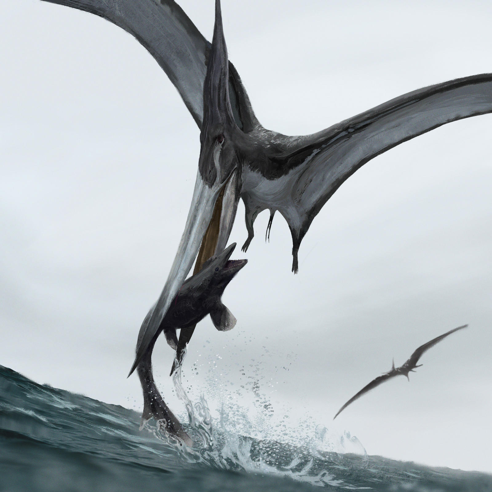

Pteranodon
Dực Long không răng kỷ Phấn trắng
Tổng quan
Kỷ
Cretaceous
Họ
Pteranodontidae
Chi
Pteranodon
Dài
3 m
Sải cánh
6 m
Nặng
13 kg
Thức ăn


Pteranodon là chi Thằn lằn bay không răng, từ Creta muộn, là một trong những chi thằn lằn bay lớn nhất. Pteranodon không phải khủng long. Tuy nhiên, Pteranodon thường xuyên xuất hiện trong các cuốn sách về khủng long.
Nguồn: wikipedia.org
Phân bố
Khu vực Bắc Mỹ
Thông tin thêm về Pteranodon
Kỷ nguyên
Pteranodon là một chi thằn lằn bay thuộc họ Pterosauria, sống cách đây 89,3-70,6 triệu năm trước vào cuối kỷ Phấn Trắng.
Phân bố
Pteranodon là động vật trên cạn, được tìm thấy dưới dạng hóa thạch trong các trầm tích (tầng Cognac-tầng Champagne) ở Bắc Mỹ (Kansas, Alabama, Nebraska, Wyoming và Nam Dakota).
Tên khoa học
Được miêu tả và đặt tên bởi Marsh, 1876. Tên Pteranodon theo tiếng Hy Lạp πτερ- "cánh" và αν-οδων "không răng", có nghĩa là "có cánh và không có răng". Pteranodon không phải khủng long. Theo định nghĩa, khủng long thuộc về Saurischia và Ornithischia, Pteranodon nằm ngoài hai nhóm này.

Kích thước
Pteranodon là một trong những chi thằn lằn bay lớn nhất, có kích thước tương đương với một con gà tây, trọng lượng khoảng 13 - 15 kg, chiều cao khoảng 1.5 - 1.8 mét, chiều dài từ 2 - 3 mét và sải cánh rộng từ 6 - 7 mét.
Ngoại hình
Dực long Pteranodon có bộ hàm rất dài và không có răng giống như của bồ nông. Phần đầu lớn với một phần đỉnh ở phía sau hộp sọ (một đặc điểm chung của các loài thằn lằn bay) có thể có chức năng nhận dạng loài, thường được gọi là mào (con đực có mào lớn hơn). Mào thường được cho là có tác dụng đối trọng với hàm hoặc cần thiết để định hướng khi bay.
Loài dực long này là một trong số ít những loài Pterosauria có xương cổ dài và bàn chân chỉ có ba ngón. So với kích thước rộng lớn của đôi cánh, phần thân của chúng khá nhỏ, nhưng các chi sau tương đối lớn so với thân và có vẻ chắc khỏe.
Chế độ ăn
Thiết kế hàm của Pteranodon và việc phát hiện xương và vảy cá hóa thạch với các mẫu vật của Pteranodon cho thấy nó là một loài ăn cá, động vật thân mềm, cua, côn trùng và động vật chết.
Các nhà cổ sinh vật học suy đoán rằng nó có thể đã lướt qua mặt nước khi đang bay, hạ cánh trước để bắt cá gần mặt nước hoặc lao xuống săn mồi như những loài chim hiện đại vẫn làm.
Khám phá
Hóa thạch của Pteranodon và các dạng liên quan được tìm thấy trong đá hình thành từ các chất được tìm thấy trong môi trường biển, hỗ trợ suy luận về lối sống giống bồ nông. Xương của chúng hoàn toàn rỗng và thành xương không dày hơn khoảng một milimét. Tuy nhiên, hình dạng của xương khiến chúng có khả năng chống lại các lực khí động học khi bay. Có khả năng Pteranodon đã cất cánh khỏi mặt nước bằng cách đối mặt với gió biển cung cấp đủ lực để nâng loài bò sát này lên không trung khi dang rộng đôi cánh.
Ngoài ra, chúng có thể trông giống như con dơi treo ngược như một cái cây với hai chân sau, cánh có thể gấp lại làm bốn và bò trên mặt đất một khoảng cách ngắn.
Sự tuyệt chủng
Pteranodon đã tuyệt chủng khoảng 66 triệu năm trước, cùng với nhiều loài khủng long và Pterosauria khác, trong sự kiện tuyệt chủng đại diện cho sự kết thúc của kỷ Phấn trắng. Dù nguyên nhân tuyệt chủng chính xác của Pteranodon và các loài khủng long khác vẫn chưa được xác định chính xác, sự tuyệt chủng này đã để lại nhiều hóa thạch quý giá, giúp các nhà khoa học hiểu rõ hơn về cuộc sống của những sinh vật này và lịch sử phát triển của Trái đất.